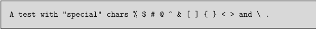
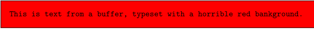

Contents
Summary
Defines a new typing environment and the corresponding
\start
and
\stop
commands. The first argument is the name of the typing environment, the last argument specifies the options to apply for this new environment.
Settings
Description
Provides the ability to create a customized environment for displaying verbatim text.
Note that difference with \setuptyping: \definetyping defines a new typing environment, while \setuptyping changes the options of an existing typing environment (including the default environment that you get when using \starttyping).
In addition to defining the corresponding \start and \stop commands, \definetyping defines a corresponding \typebuffer command, as seen in the second example below.
Examples
Creation and use
-
\definetyping [TTinput] [before={\startframedtext[width=\makeupwidth, background=color, backgroundcolor=lightgray]}, after={\stopframedtext}] \startTTinput A test with "special" chars % $ # @ ^ & [ ] { } < > and \ . \stopTTinput
- 
Creation and use of a \typebuffer customization
-
\definetyping [TTredbg] [before={\startframedtext[width=\makeupwidth, background=color, backgroundcolor=red]}, after={\stopframedtext}] \startbuffer[buf] This is text from a buffer, typeset with a horrible red bankground. \stopbuffer \typeTTredbgbuffer[buf]
- 